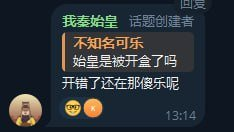
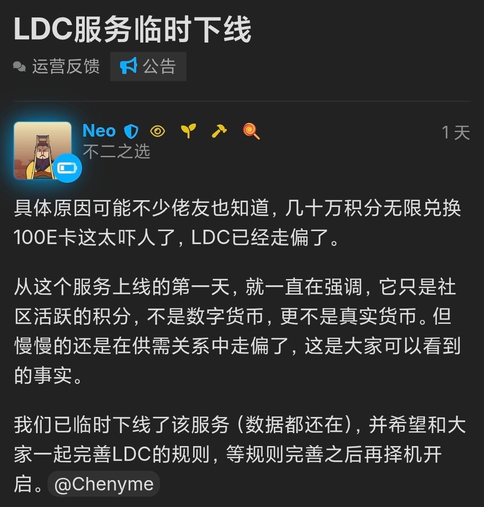
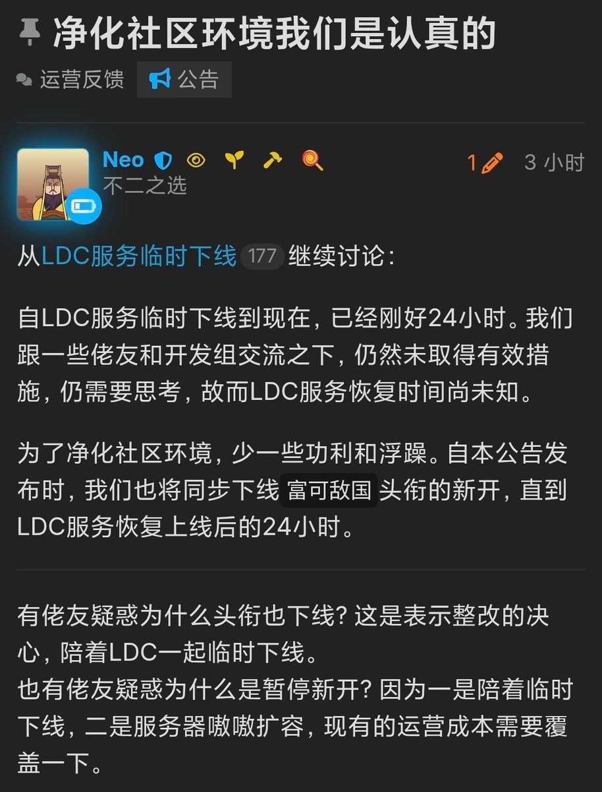
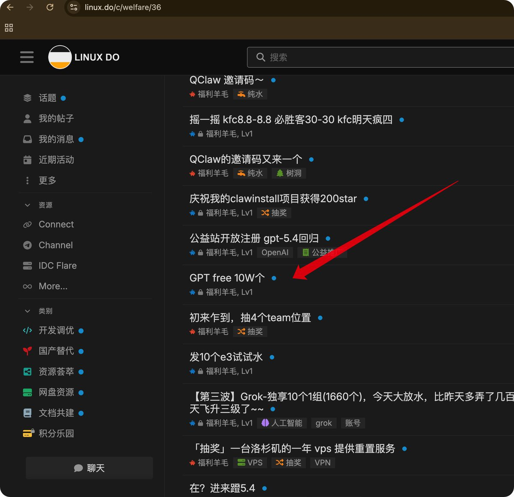

还是重新介绍一下LINUX DO吧，先说站长Neo（彭志乐）的著作，
ja-netfilter：破解、激活JetBrains全家桶
pandora：pengzhile做的ChatGPT镜像站，众多2API（逆向）的雏形
再说论坛制度，免费推广必须非商业性质，强制接入L站的OAuth（LINUX DO Connect）且可直接登录。付费推广需订阅每月600美元的「富可敌国」头衔并佩戴，才可以发布FAQ内许可的内容，头衔过期后清空历史发布的推广帖（只卖推广权不卖广告位，一旦「富可敌国」出事，即撇清责任不承认收钱即背书，只需要给钱就能推广，不像X还做了ID认证
最后就是上面的gpt grok注册机，2api逆向网页chat，包括L站前期也是在各大小群里搜刮资源。所到之处，寸草不生，直接给一些原本「免费试用」的渠道薅炸，甚至是ChatGPT Team还能开出万人配额还邀请 @sama 等OpenAI员工进团队内贴脸开大😅😅😅
ja-netfilter：破解、激活JetBrains全家桶
pandora：pengzhile做的ChatGPT镜像站，众多2API（逆向）的雏形
再说论坛制度，免费推广必须非商业性质，强制接入L站的OAuth（LINUX DO Connect）且可直接登录。付费推广需订阅每月600美元的「富可敌国」头衔并佩戴，才可以发布FAQ内许可的内容，头衔过期后清空历史发布的推广帖（只卖推广权不卖广告位，一旦「富可敌国」出事，即撇清责任不承认收钱即背书，只需要给钱就能推广，不像X还做了ID认证
最后就是上面的gpt grok注册机，2api逆向网页chat，包括L站前期也是在各大小群里搜刮资源。所到之处，寸草不生，直接给一些原本「免费试用」的渠道薅炸，甚至是ChatGPT Team还能开出万人配额还邀请 @sama 等OpenAI员工进团队内贴脸开大😅😅😅



